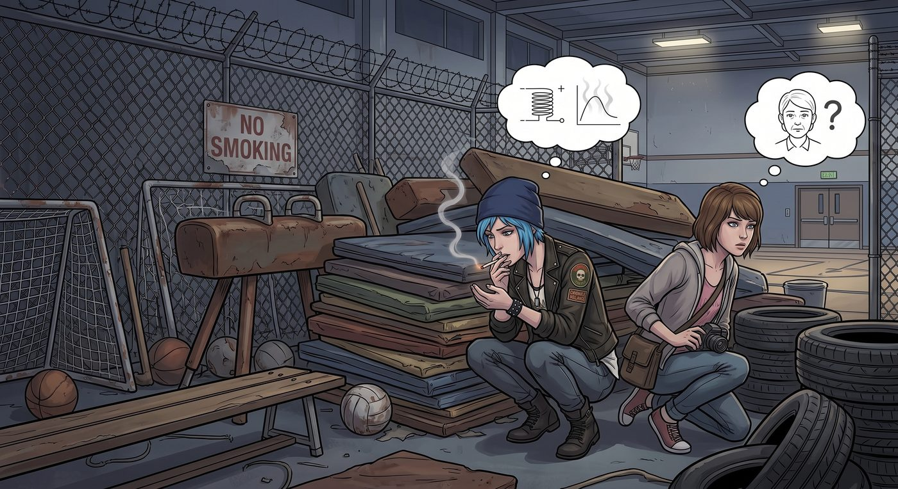

舊地重遊

一、老地方
體育館後門那片堆放舊器材的鐵絲網死角,依然是校園裡最隱蔽的抽菸據點——即使 Chloe 已經是「重新做人」的模範生代表,那個藏在陰影裡的老習慣,還是時不時把她拉回這裡。
「就抽一根,」她跟 Max 咬耳朵,「下節課還有十分鐘。」
Max 沒有阻止,只是陪著她一起蹲在器材堆後面,權當放風。
二、警報大作
那天剛好下著小雨,體育館附近的走廊少了平時的人氣。Chloe 叼著煙,靠在牆邊,煙霧裊裊往上飄——結果沒注意到頭頂正上方,恰好裝著一個老舊到理應早就報廢、卻被學校捨不得換的煙霧感應器。
刺耳的警報聲毫無預警地在整棟樓炸開。
緊接著,天花板上的灑水系統跟著誤觸發,冰冷的水柱劈頭蓋臉地澆下來。
「我操——」Chloe 被澆得渾身一激靈,叼著的煙頭瞬間被澆滅,整個人措手不及地被淋成落湯雞。
「快跑!」Max 一把抓住她的手腕,拽著她沒命地朝反方向狂奔。
兩人深一腳淺一腳地衝過積水的走廊,渾身濕透,狼狽地拐過轉角——正好一頭撞上正在巡查的 David。
案發後,David 早已因為當年私裝監控、擅自跟蹤學生等失職行為被學校正式解職,如今是憑專業背景接案的獨立安保顧問。這陣子,校方委託他重新評估校園裡老舊消防與警報系統的可靠性,他手裡的對講機,也是這次委託案臨時核發給他、方便跟校方保全室通報狀況用的。此刻他正拿著對講機,一臉狐疑地看著眼前這對渾身濕透、氣喘吁吁的兩人。
「……怎麼回事?」他皺眉,目光在 Chloe 那頭滴著水的藍髮和她手裡還捏著、早已被澆滅的濕煙頭之間來回打量。
Chloe 硬著頭皮,擠出一個乾巴巴的笑容:「老兵,我只是在測試學校的應急消防響應速度,結果反應挺靈敏的,值得表揚——反正你這次來,不也是為了評估這套系統靈不靈嗎?」
David 沉默地盯著她看了兩秒,顯然一個字都不信,但也沒有立刻拆穿,只是無奈地嘆了口氣,對著對講機回報「誤觸發,無需增派消防」,轉身走開前,丟下一句:「回去換身乾衣服。」
三、校長的搜查
消息很快傳到 Wells 校長耳朵裡——雖然沒有直接證據,但校長憑著多年經驗,一眼就認定這場烏龍跟 Chloe 脫不了關係,把她堵在儲物櫃前,一臉嚴肅地要求檢查她的隨身物品。
Chloe 面不改色地掏空口袋,攤開手掌:「校長,您請看,乾乾淨淨,什麼都沒有。」
Wells 校長瞇眼打量她那雙擦得鋥亮的高幫工裝靴,遲疑了兩秒,顯然還是不太甘心就這麼放過她。
「校長,」Chloe 見狀,決定先發制人,語氣裡帶著一絲刻意的委屈,「每次學校出點什麼事,您第一個懷疑的都是我。這不就是典型的刻板印象嗎?憑什麼藍頭髮、穿皮衣的學生,就一定跟麻煩事脫不了關係?」
正巧路過的 Ms. Whitfield 聽到這句話,立刻習慣性地想介入緩頰,一臉「靈光一閃」的表情湊了過來。
「校長,」她笑瞇瞇地開口,「其實這正好是個機會,展現咱們學校『不以貌取人、平等對待每位學生』的教育理念——」
「打住。」
Wells 校長難得地打斷了她,語氣裡帶著少見的不耐煩,眉頭皺得死緊。
「Whitfield 老師,」他沒好氣地說,「這套話術我這學期已經聽妳用了不下五次,每次都能把八竿子打不著的事,包裝成我的『治校英明』。我雖然不是什麼名偵探,但我幹這行也有二十年了,」他轉頭死死盯著 Chloe,「這孩子身上的煙味,還有走廊監控裡她進體育館後門的時間點,跟警報觸發的時間,前後差不到三分鐘。妳當我真是傻子?」
儲物櫃前的空氣瞬間凝固。
Chloe 臉上那副委屈巴巴的表情僵住了半秒,心裡暗罵一聲——這老狐狸今天是怎麼回事,怎麼突然不按套路出牌了。
Ms. Whitfield 也被這反常的堅持弄得措手不及,一時語塞,笑容有點掛不住。
「校長,」Chloe 只好硬著頭皮繼續嘴硬,「監控畫面也證明不了什麼,說不定是巧合——」
「巧合。」Wells 校長冷笑一聲,顯然一個字都不信,伸手就要示意她把鞋子也一併脫下檢查。
Chloe 的心瞬間提到嗓子眼,腦子飛速運轉,盤算著要不要乾脆認栽——就在這千鈞一髮之際,走廊另一頭,Hendricks 教練忽然匆匆跑來,神色慌張地喊道:「校長!剛才那個誤觸發的消防公司打來電話,說是感應器本身老化短路,已經是這學期第三次誤報了,他們要求校方立刻更換全部設備,不然拒絕再繼續提供保固服務!」
Wells 校長的注意力瞬間被這個更緊急、更棘手的消息扯走,臉色又是一變,顧不上繼續追究 Chloe,匆匆丟下一句「這事還沒完」,轉身就要走——卻又忽然停下腳步,回頭深深看了一眼站在原地的 Chloe,語氣裡帶著一絲看透一切的疲憊。
「別以為我不知道,」他意味深長地說,「Hendricks 那隻老狐狸打的什麼主意。」
說完,他也沒再多解釋,逕自轉身,急急忙忙朝消防設備的方向走遠了。
Chloe 整個人僵在原地,瞳孔地震——這句話跟自己心裡剛剛冒出來的那個念頭,一字不差。
「他、」她結結巴巴地看向 Max,「他該不會真的會讀心術吧?」
校長的背影剛徹底拐過轉角,Hendricks 教練立刻收起那副慌張的表情,轉頭朝著 Chloe 和 Ms. Whitfield,飛快地眨了一下眼睛,嘴角勾起一抹心照不宣的笑意,一句話沒說,便若無其事地跟著校長的方向走遠了。
「這老狐狸,」Chloe 低聲喃喃,還沒從剛才的震驚裡回過神,「原來校長也看穿了,只是懶得拆穿而已。」
「畢竟,」Max 也跟著笑起來,「妳當初可是幫他解決過『AI 體育課』的燃眉之急,這叫還人情——看來校長心裡跟明鏡似的,只是選擇睜一隻眼閉一隻眼。」
Chloe 長長舒了一口氣,像是死裡逃生,拍拍胸口對 Max 咧嘴一笑:「差點就栽了。」
Ms. Whitfield 也是一臉劫後餘生的表情,尷尬地推了推眼鏡,喃喃自語:「今天這招怎麼不管用了……」
四、失靈的老招數
其實一開始,在警報響起的前一秒,Max 曾下意識地想故技重施——當年 Max 剛覺醒超能力那陣子,只要 Chloe 抽菸快要被 David 逮個正著,她總能精準地在警報拉響前搶過菸頭、就地銷毀證據,再拉著人躲進最近的暗處。這一次,她也反射性地想這麼做。
然而,那股熟悉的暈眩感剛剛湧起,還沒等她真正「回」到警報響起之前,眼前的畫面就已經猛地被拉回現實——短短不到一秒的回溯,連伸手碰到煙頭的時間都不夠,更別提提前阻止感應器被觸發。
下一秒,警報已經響了。
Max 站在原地愣了半秒,鼻尖傳來一絲熟悉的濕熱感——鼻血還是流了下來,卻只換來這麼一丁點微不足道的時間。
「不管用了。」她喃喃自語,聲音裡帶著一絲自己都沒預料到的失落。
那份曾經足以扭轉整個危機的力量,如今連幫 Chloe 躲過一次無傷大雅的校園惡作劇後果都做不到了。
好在,這一次,她們靠的不是超能力,而是最原始的——狂奔、狡辯,和一雙靴子裡的夾層。
五、雨後
放學後,兩人窩在雙鯨餐廳的卡座裡,分著一份剛烤好的薯條,渾身的濕氣總算被室內的暖氣烘乾。
「妳剛才,」Chloe 忽然開口,語氣裡帶著一絲不確定的試探,「是不是想用超能力?」
Max 愣了一下,沒想到會被看穿,只好點點頭。
「沒成功?」
「嗯,」Max 苦笑,「連提前搶下煙頭的時間都不夠。」
Chloe 沒有像以前那樣單純地感到可惜,反而伸手,輕輕拍了拍她的手背。
「沒關係,」她說,語氣裡帶著一種久違的、篤定的溫柔,「妳看,沒有超能力,我們照樣全身而退——濕漉漉的,但全身而退。」
Max 抬眼看她,忽然覺得,這句輕描淡寫的安慰,比任何一次成功的時間回溯,都更讓她感到踏實。
窗外的雨還沒停,雙鯨餐廳裡飄著咖啡和薯條的香氣,兩人分享著同一份晚餐,誰都沒有再提起那個逐漸遠去、卻曾經無比熟悉的「掌控時間」的舊日子。